Internet das Coisas
Conecta sensores, máquinas e sistemas para troca de informações em tempo real.
TECNOLOGIA • AUTOMAÇÃO • IoT
Explore os principais robôs industriais e sensores utilizados na Indústria 4.0, suas aplicações, vantagens, funcionamento e integração com Internet das Coisas.
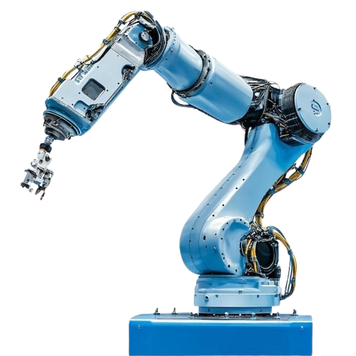
CONHECIMENTO
Conecta sensores, máquinas e sistemas para troca de informações em tempo real.
Manipuladores industriais executam tarefas repetitivas com velocidade e precisão.
Mantem processos estáveis e repetíveis, reduzindo variações, aumentando produtividade e melhorando a qualidade. Em sistemas modernos, viabiliza integração ponta a ponta entre robôs, sensores e sistemas supervisórios (SCADA/MES).
Integra inteligência artificial, robôs e IoT em um mesmo ambiente.
SENSORIAMENTO
Sensoriamento é a aquisição de grandezas físicas ou ambientais por meio de sensores, transformando fenômenos como temperatura, luz, distância, pressão ou corrente em sinais que um sistema consegue interpretar.
Sensores fornecem dados para monitorar máquinas e processos, detectar condições anormais e apoiar decisões de controle, aumentando repetibilidade e segurança.
Depois da aquisição, os dados podem ser processados por Arduino, ESP32, Raspberry Pi ou CLPs e enviados por interfaces e protocolos adequados para supervisão e sistemas IoT.
Uma leitura de sensor pode gerar uma ação: ligar um motor, acionar uma bomba, emitir um alarme, ajustar iluminação ou registrar dados para análise.
CATÁLOGO
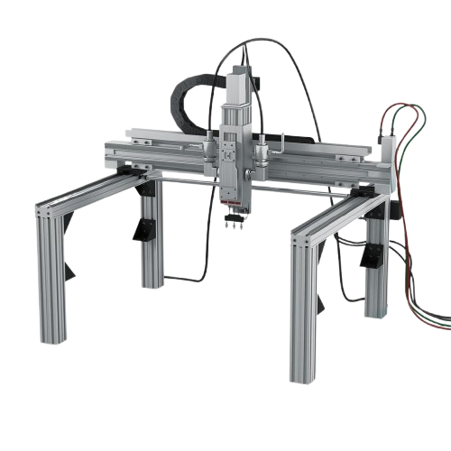
Precisão extrema para movimentos lineares.
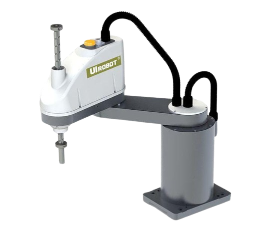
Ideal para montagem de alta velocidade.
Amplamente utilizado na indústria, especialmente em aplicações que exigem flexibilidade.
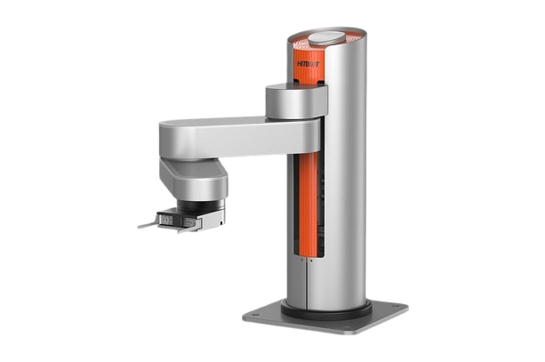
Excelente para carga e descarga.
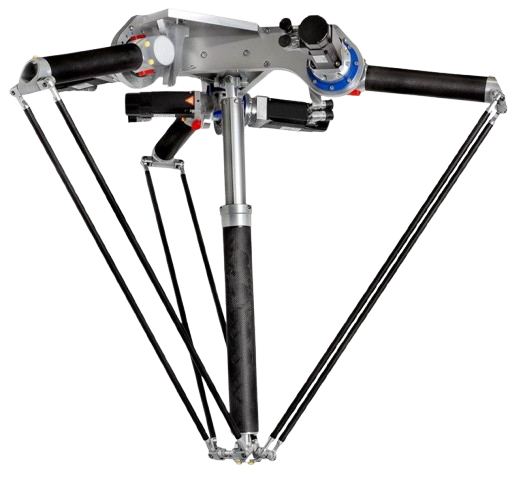
Velocidade extremamente alta.
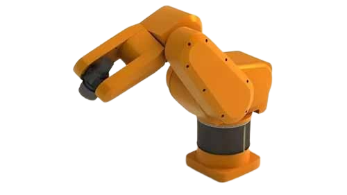
Grande alcance para operações pesadas.
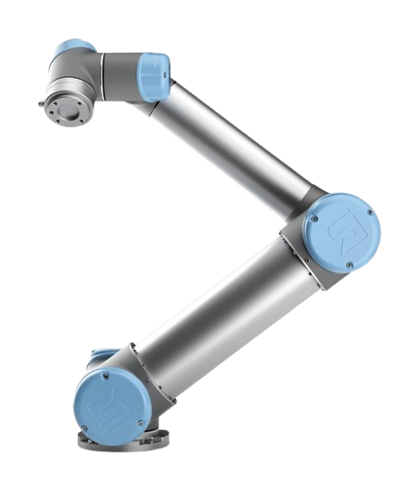
Projetado para trabalhar ao lado de pessoas.
CATÁLOGO DE SENSORES
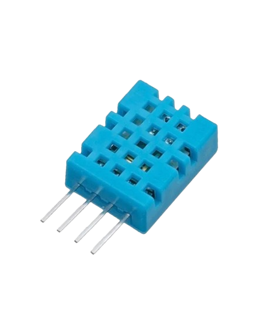
Estações meteorológicas simples, HVAC, monitoramento ambiental, automação residencial e protótipos IoT.
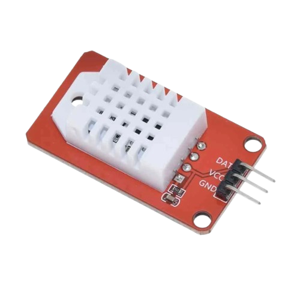
Monitoramento climático, estufas, HVAC, armazenamento e projetos IoT de ambiente.
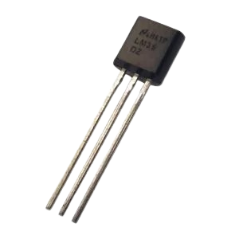
Monitoramento térmico, fontes de alimentação, máquinas, eletrônica e aquisição de temperatura.
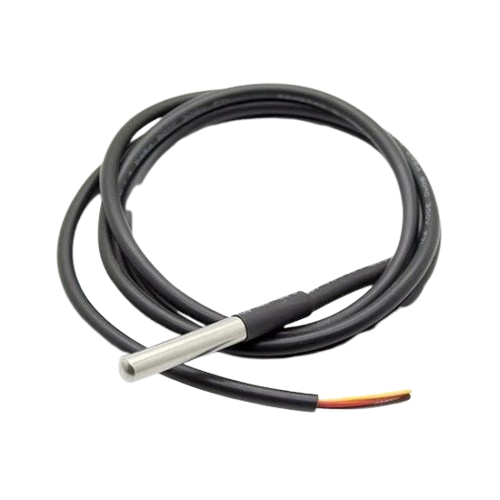
Monitoramento de tubulações, tanques, sistemas térmicos, equipamentos e ambientes distribuídos.
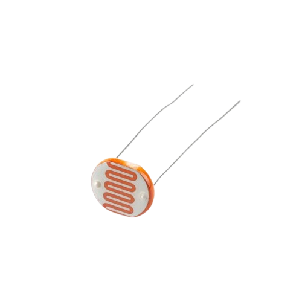
Controle automático de iluminação, sensores crepusculares, sistemas de presença luminosa e protótipos IoT.

Iluminação inteligente, automação predial, agricultura, controle de brilho e monitoramento ambiental.
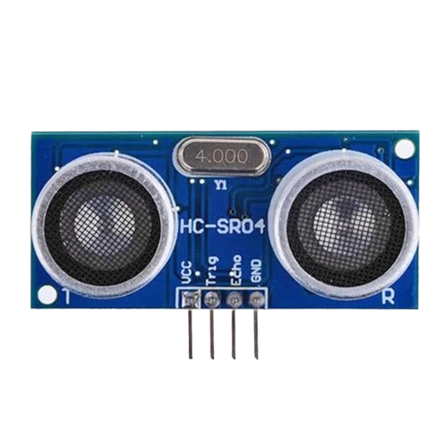
Robótica, detecção de obstáculos, medição de nível em protótipos e automação de pequenos sistemas.
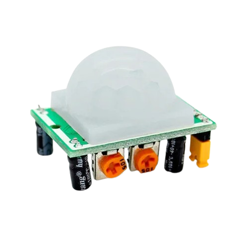
Iluminação automática, alarmes, monitoramento de presença e automação predial.
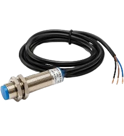
Detecção de peças metálicas, fim de curso sem contato, contagem e posicionamento em máquinas.
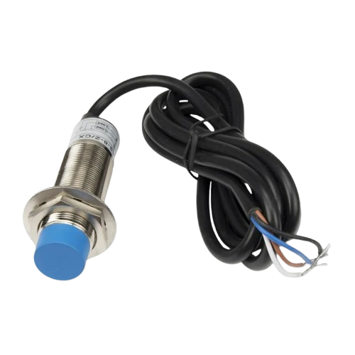
Detecção de nível, presença de materiais, contagem e automação de processos.
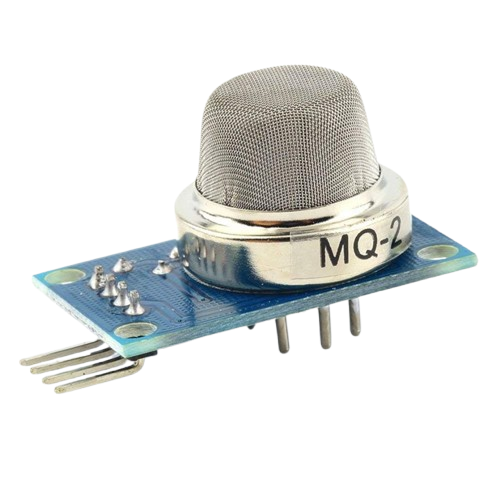
Detecção de vazamentos, alarmes de fumaça e protótipos de monitoramento de gases.
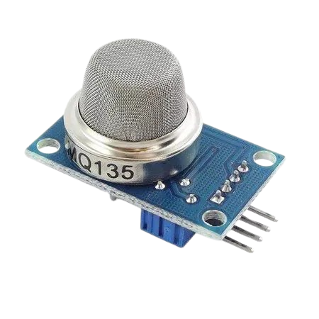
Monitoramento da qualidade do ar, estufas, ambientes internos e projetos IoT.
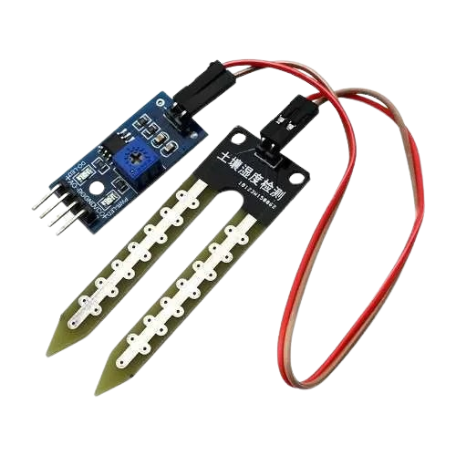
Agricultura inteligente, irrigação automática, jardins e estufas IoT.
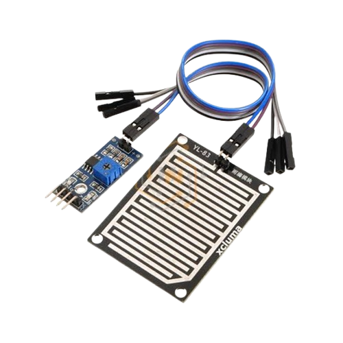
Detecção de chuva, automação de coberturas, estações meteorológicas simples e IoT.

Reservatórios, caixas d’água, proteção contra transbordamento e automação de bombas.
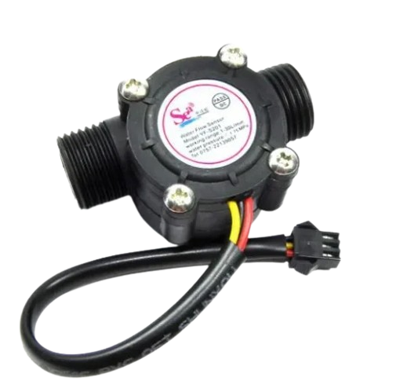
Medição de consumo de água, automação hidráulica, irrigação e projetos IoT.
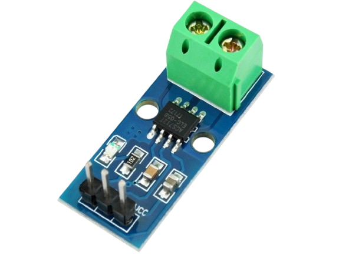
Monitoramento de motores, fontes, cargas elétricas, proteção e telemetria de energia.
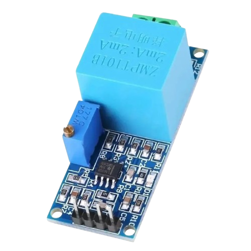
Monitoramento de rede AC, medidores de energia e projetos de automação elétrica.
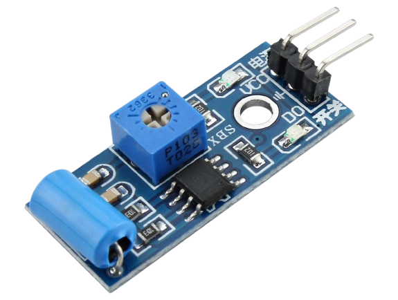
Detecção de vibração, alarmes, monitoramento simples de máquinas e protótipos.
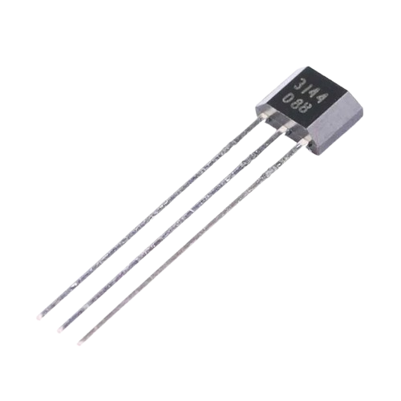
Medição de rotação, velocidade de motores, detecção de posição e contagem de ciclos.
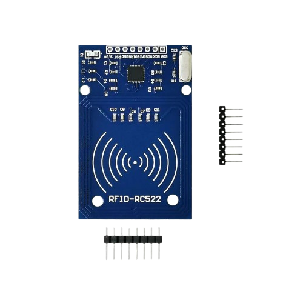
Controle de acesso, identificação, rastreamento e automação.
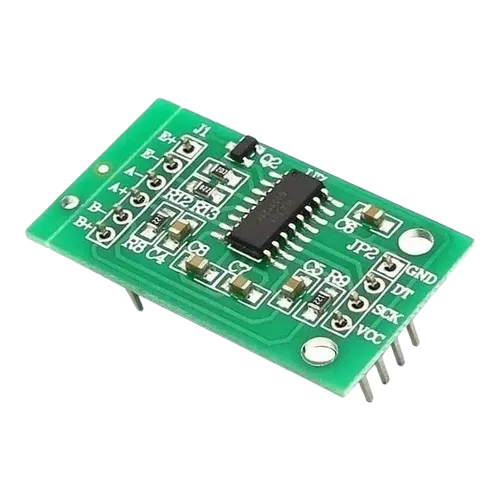
Balanças, dosagem, controle de estoque e sistemas de pesagem IoT.
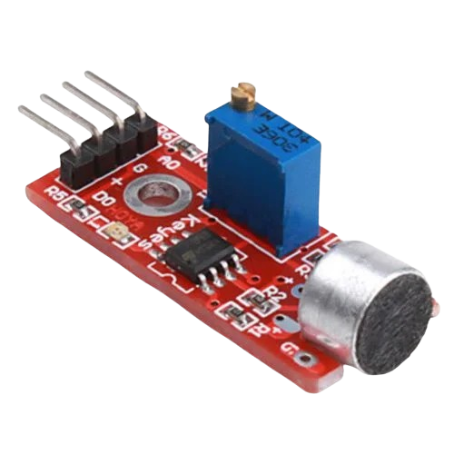
Detecção de ruído, comandos simples por som, alarmes e monitoramento ambiental.
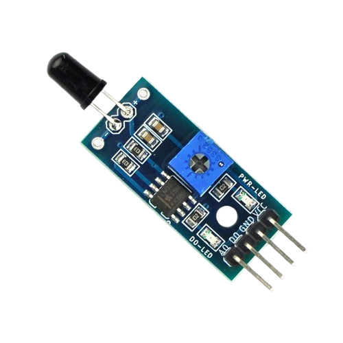
Detecção experimental de chama, alarmes e protótipos de segurança.
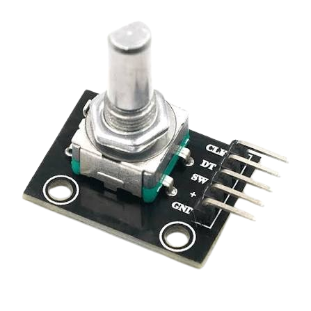
Controle de posição, menus, ajuste de parâmetros e controle de rotação.
ARDUINO
Arduino é uma plataforma de prototipagem eletrônica formada por placas com microcontrolador e um ambiente de programação. Ela permite ler entradas, processar dados e controlar saídas de forma acessível.
O programa é gravado no microcontrolador. Sensores ligados às entradas fornecem sinais analógicos ou digitais; o código interpreta esses dados e aciona atuadores ou envia informações para outros sistemas.
Em conjunto com módulos de comunicação ou placas como ESP32, o sistema pode enviar as leituras para aplicações, dashboards e serviços IoT. A interface do sensor deve ser compatível com a tensão e o protocolo usados.
#include <DHT.h>
#define DHTPIN 2
#define DHTTYPE DHT11
DHT dht(DHTPIN, DHTTYPE);
void setup(){ Serial.begin(9600); dht.begin(); }
void loop(){
Serial.println(dht.readTemperature());
Serial.println(dht.readHumidity());
delay(2000);
}#include <DHT.h>
DHT dht(2, DHT22);
void setup(){ Serial.begin(9600); dht.begin(); }
void loop(){
Serial.print(dht.readTemperature());
Serial.print(" C / ");
Serial.print(dht.readHumidity());
Serial.println(" %");
delay(2000);
}const int sensor = A0;
void setup(){ Serial.begin(9600); }
void loop(){
int leitura = analogRead(sensor);
float tensao = leitura * 5.0 / 1023.0;
float temperatura = tensao * 100.0;
Serial.println(temperatura);
delay(500);
}#include <OneWire.h>
#include <DallasTemperature.h>
OneWire oneWire(2);
DallasTemperature sensores(&oneWire);
void setup(){ Serial.begin(9600); sensores.begin(); }
void loop(){
sensores.requestTemperatures();
Serial.println(sensores.getTempCByIndex(0));
delay(1000);
}const int ldr = A0;
void setup(){ Serial.begin(9600); }
void loop(){
int luz = analogRead(ldr);
if(luz < 400) digitalWrite(13, HIGH);
else digitalWrite(13, LOW);
Serial.println(luz);
delay(200);
}#include <BH1750.h>
#include <Wire.h>
BH1750 luz;
void setup(){
Wire.begin(); luz.begin();
Serial.begin(9600);
}
void loop(){
Serial.println(luz.readLightLevel());
delay(500);
}const int trig=9, echo=10;
void setup(){ pinMode(trig,OUTPUT); pinMode(echo,INPUT); Serial.begin(9600); }
void loop(){
digitalWrite(trig,LOW); delayMicroseconds(2);
digitalWrite(trig,HIGH); delayMicroseconds(10);
digitalWrite(trig,LOW);
long t=pulseIn(echo,HIGH);
Serial.println(t*0.0343/2);
delay(200);
}const int pir=2;
void setup(){ pinMode(pir,INPUT); Serial.begin(9600); }
void loop(){
if(digitalRead(pir)) Serial.println("Movimento");
else Serial.println("Sem movimento");
delay(200);
}const int mq2=A0;
void setup(){ Serial.begin(9600); }
void loop(){
int valor=analogRead(mq2);
Serial.println(valor);
if(valor > 500) digitalWrite(13,HIGH);
else digitalWrite(13,LOW);
delay(200);
}const int solo=A0;
const int bomba=8;
void setup(){ pinMode(bomba,OUTPUT); Serial.begin(9600); }
void loop(){
int umidade=analogRead(solo);
digitalWrite(bomba, umidade > 600 ? HIGH : LOW);
Serial.println(umidade);
delay(500);
}COMPARATIVO
| Robô | Movimento | Ponto forte | Aplicação |
|---|---|---|---|
| Cartesiano | Linear | Precisão | Paletização |
| SCARA | Horizontal | Velocidade | Montagem |
| Articulado | Rotativo | Flexibilidade | Soldagem |
| Delta | Paralelo | Rapidez | Embalagem |
| Cobot | Colaborativo | Segurança | Inspeção |